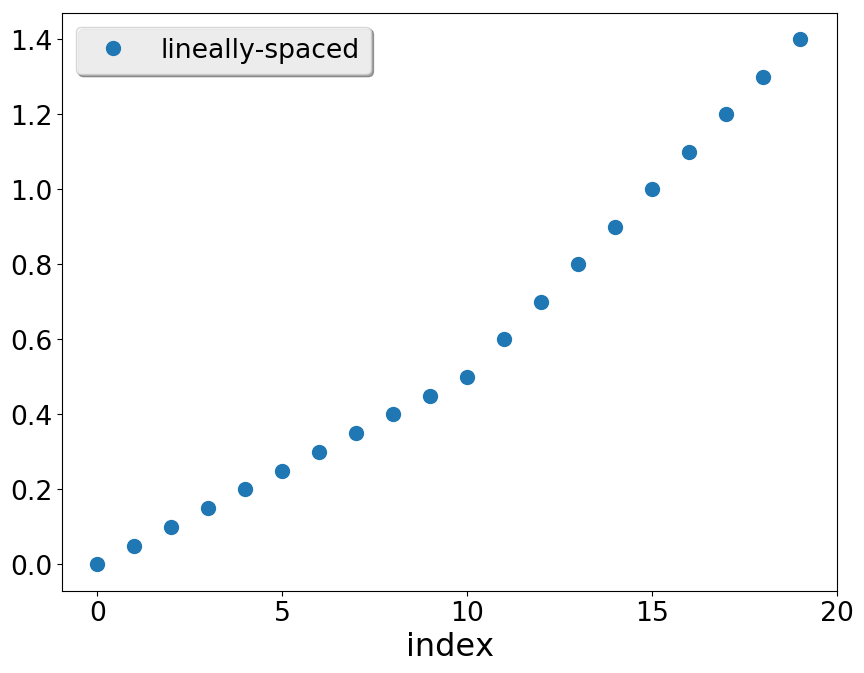
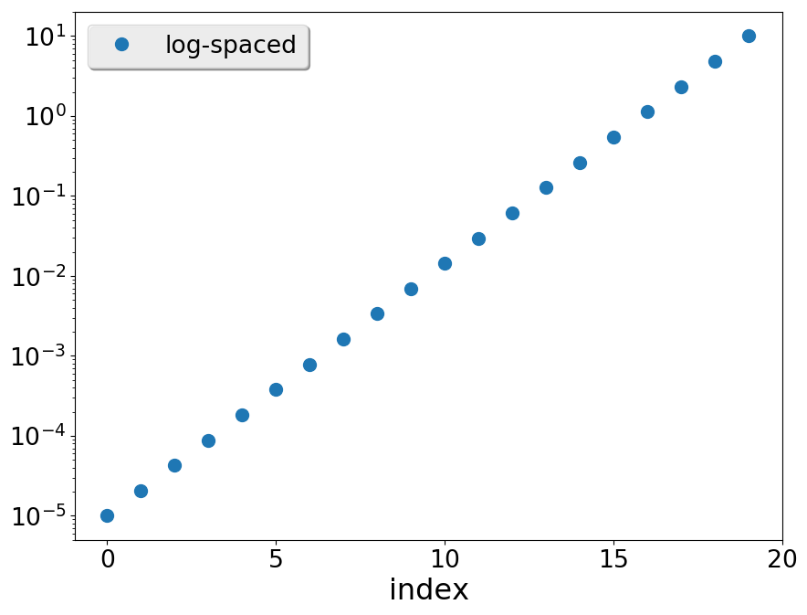
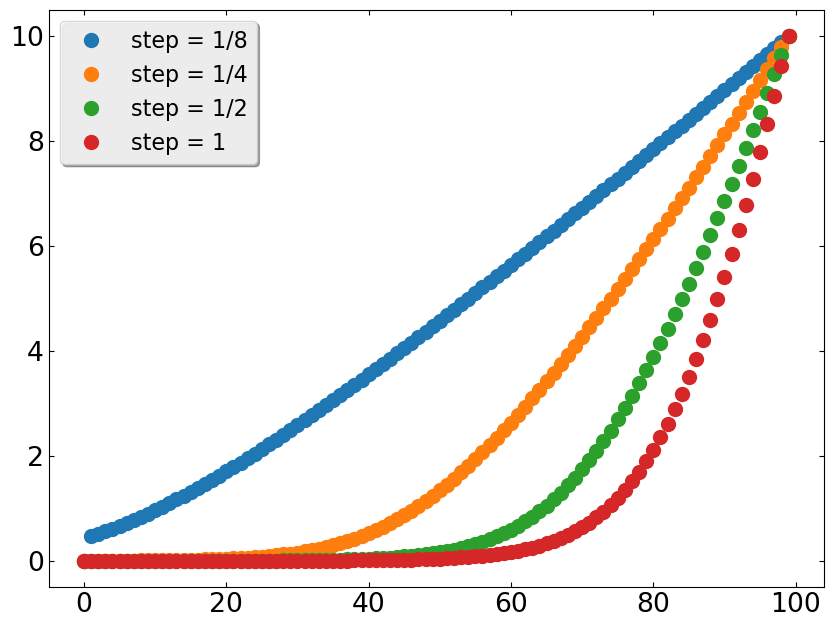

This module contains routines to generate and operate on arrays
This submodule provides a few convenience routines to work with arrays
function allclose() Returns .True. if two arrays are element-wise equal within a tolerance.
subroutine save_array() Stores an array to file or stdout
function mean() Computes the arithmetic mean of the array.
function std() Computes the standard deviation of the array.
function merge_sorted() Creates a sorted array with values from two input sorted arrays
This submodule provides convenience routines to create commonly occurring grids, somewhat mimicking those appearing in Numpy:
linspace() returns evenly (linearly) spaced numbers over a specified interval.logspace() and geomspace() return logarithmically evenly spaced numbers over a specified interval.arange() returns an array of integer numbers from a given interval.
The signature of linspace is:
linspace(start, end, num[, endpoint=.True.] [, retstep] )
This means (compare to documentation of numpy.linspace):
The name of the function is linspace
start: The first value of the sequence desiredend: The end value of the sequence, unless endpoint is set to False. In that case, the sequence consists of all but the last of num + 1 evenly spaced samples, so that stop is excluded. Note that the step size changes when endpoint is False.num: Number of samples to generate. Note : it is required not optional .endpoint: (boolean, optional). If .True., end is the last sample. Otherwise, it is not included. Default is .True.retstep: (optional). If present will have the value of step on output.
program ex_linspace
use numfor, only : dp, linspace, save_array
implicit none
integer , parameter :: N = 10
real (dp), dimension(2 * N) :: a
real (dp) :: step
print "(5(f4.2,1x))" , linspace(2._dp, 3.0_dp, num=5)
print "(5(f4.2,1x))" , linspace(2._dp, 3.0_dp, num=5, endpoint=.false.)
print "(5(f4.2,1x))" , linspace(2._dp, 3.0_dp, num=5, retstep=step)
print "(A)" , repeat('-' , 20)
a(:n) = linspace(0._dp, 0.5_dp, n, endpoint=.false.)
a(n + 1:) = linspace(0.5_dp, 1.4_dp, n)
call save_array(a, 5, fmt='f8.5' )
end program ex_linspace
Prints
2.00 2.25 2.50 2.75 3.00
2.00 2.20 2.40 2.60 2.80
2.00 2.25 2.50 2.75 3.00
--------------------
0.00000 0.20000 0.40000 0.70000 1.10000
0.05000 0.25000 0.45000 0.80000 1.20000
0.10000 0.30000 0.50000 0.90000 1.30000
0.15000 0.35000 0.60000 1.00000 1.40000

There are two different functions returning grids with data equispaced in a logarithmic scale.
The function logspace(), takes as arguments the exponents of the endpoints, while geomspace() takes directly the endpoints. Their signature are:
logspace(start, end, num [, endpoint=.True.] [, base=10._dp] )
where:
The interval spans between base**start and base**end
endpoint indicates if the final point end will be included, like in linspace.base of the log space. By default is 10.
geomspace(start, end, num[, endpoint=.True.] [, base=10._dp] )
being the only difference that now the interval spans between start and end
program ex_logspace
use numfor, only : dp, zero, logspace, geomspace, save_array
implicit none
integer , parameter :: N = 10
real (dp), dimension(2 * N) :: a
print '(4(f8.2,1x))' , logspace(2._dp, 3.0_dp, num=4)
print '(4(f8.2,1x))' , logspace(2.0_dp, 3.0_dp, num=4, base=2.0_dp)
print '(4(f8.2,1x))' , logspace(3._dp, zero, 4)
print "(A)" , repeat('-' , 20)
print '(4(f8.2,1x))' , geomspace(1._dp, 1000._dp, num=4)
print '(4(f8.2,1x))' , geomspace(-1000._dp, -1._dp, num=4)
print "(A)" , repeat('-' , 20)
a = geomspace(1.e-5_dp, 10._dp, 20)
call save_array(a, 5, fmt='f9.6' )
end program ex_logspace
Prints
100.00 215.44 464.16 1000.00
4.00 5.04 6.35 8.00
1000.00 100.00 10.00 1.00
--------------------
1.00 10.00 100.00 1000.00
-1000.00 -100.00 -10.00 -1.00
--------------------
0.000010 0.000183 0.003360 0.061585 1.128838
0.000021 0.000379 0.006952 0.127427 2.335721
0.000043 0.000785 0.014384 0.263665 4.832930
0.000089 0.001624 0.029764 0.545559 10.000000

The routine loglinspace() produces grids with different behavior depending on the values of step and ratio.
It is nearly uniform, with spacing approximately step when ratio
program ex_loglinspace
use numfor, only : dp, zero, str, loglinspace, save_array
implicit none
character(len=:) , allocatable :: header
character(len=:) , allocatable :: fname
integer , parameter :: N = 100
real (dp), dimension(N, 4) :: a
real (dp), dimension(4) :: steps
real (dp) :: step, ratio
real (dp) :: xmin, xmax
integer :: i
xmin = 1.e-4_dp; xmax = 10._dp
ratio = 1.15_dp; steps = [0.125_dp, 0.25_dp, 0.5_dp, 1._dp]
header = ""
do i = 1, 4
step = steps(i)
a(:, i) = loglinspace(xmin, xmax, n, step=step, ratio=ratio)
header = header//" step = " //str(step)
end do
fname = "data/ex_loglinspace.dat"
call save_array([a(:, 1), a(:, 2), a(:, 3), a(:, 4)], 4, fname=fname, fmt='f16.13' , header=header)
end program ex_loglinspace

There are routines implemented to sort and search sorted arrays.
 1.9.7
1.9.7